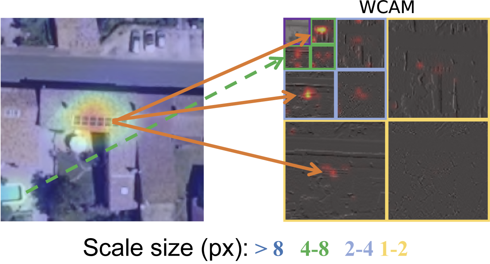
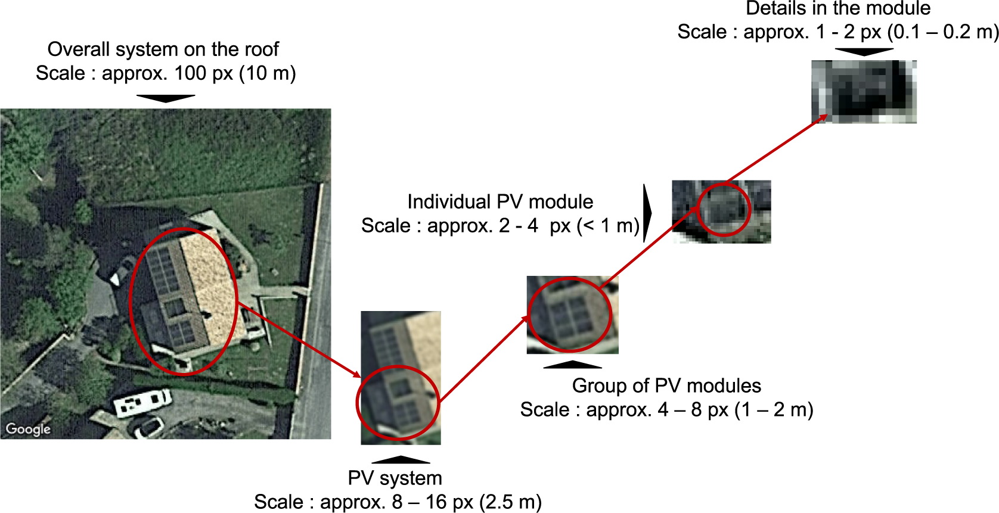
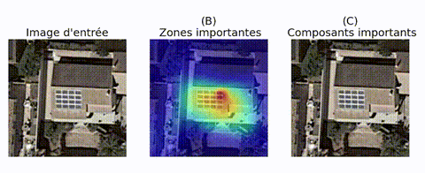
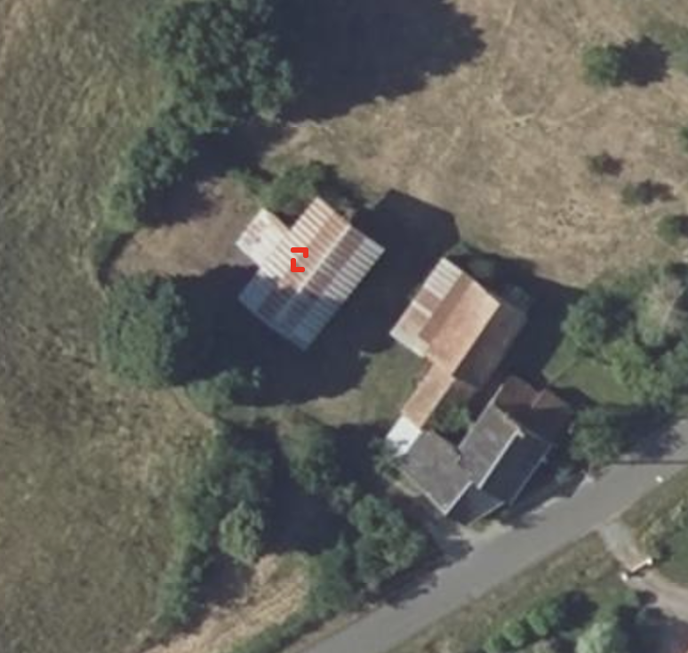
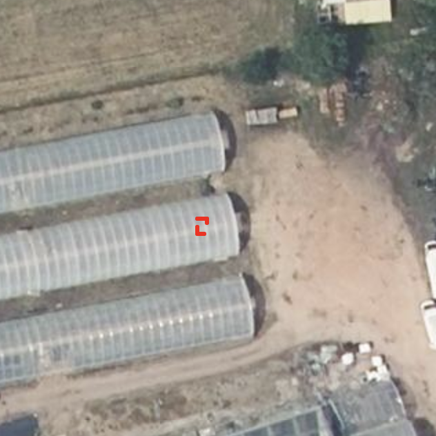
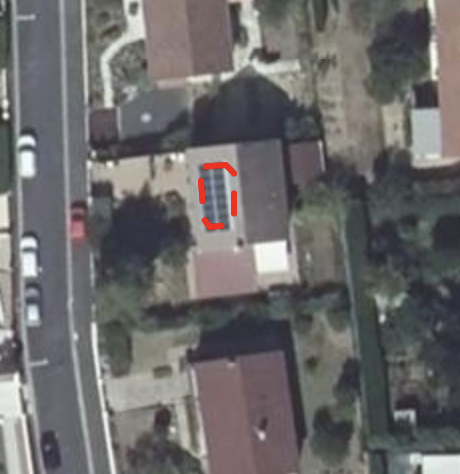

When I was developing DeepPVMapper — a deep learning pipeline that maps rooftop photovoltaic installations from aerial imagery across France — the question I got asked most wasn't how accurate the model was. It was simpler, and harder: does it actually detect solar panels?
At first this sounds like the same question. It isn't. A model can score well on a held-out test set and still be latching onto the wrong thing. Precision and recall tell you the model agrees with your labels; they don't tell you why. And "why" is exactly what you need before trusting a model deployed at the scale of an entire country, because the failure modes that matter — the ones that surface once you leave the validation set and hit a new region, a new roof material, a new camera — are invisible to an aggregate metric.
Why "what does it see" is hard
The instinctive answer is to reach for an explainability method, get a saliency map, and look at which pixels the model attended to. I did that. It's the standard toolkit — Grad-CAM, integrated gradients, occlusion-based attributions — and all of these answer the same question: where did the model look?
That's useful, but it isn't the question I needed answered. For a model, a solar panel is not a semantic category — it's a distribution of pixel intensities. What I needed to know wasn't where a prediction came from on the image, but what kind of visual structure it was reacting to at that location. Was it the fine, repetitive texture of individual PV cells and their grid lines? The coarse rectangular outline of the array against the roof? Something else entirely — a skylight, a water tank, a shadow with the right aspect ratio? None of the existing pixel-domain tools could answer that. They could point at a location; they couldn't describe what was there from the model's point of view.
Decomposing the image into scales
This gap is what pushed us to build a new attribution method based on wavelet decomposition, first introduced as the Wavelet Scale Attribution Method (WCAM), and later generalized as the Wavelet Attribution Method (WAM) at ICML 2025.
Wavelets decompose an image into a set of scales — from coarse, low-frequency components (the general shape and layout of an object) to fine, high-frequency components (texture, edges, small repeated patterns). Unlike a plain pixel-domain heatmap, a wavelet attribution tells you, for a given location, which scale of visual information the model's decision actually depends on.

Applied to a PV detection, this distinction is exactly what I was missing: does the model rely mostly on the coarse shape of the array — a dark rectangle on a lighter roof — or on the fine texture of individual modules and their grid pattern? Two models can produce an identical bounding box and an identical saliency heatmap while relying on completely different, and not equally reliable, visual evidence. This matters especially for PV systems, which are themselves multi-scale objects: the same installation can be described as a roof-sized system, a cluster of modules, or a few centimeters of grid line, depending on where you zoom in.

The clearest way to see what a model is actually keying on is to progressively strip away the wavelet components it considers least important and watch what survives.

The reveal: an excellent grid detector
Running this analysis at scale across DeepPVMapper's predictions gave a clear, and slightly humbling, answer. The model wasn't, in general, detecting solar panels. It was detecting grids — regular, high-frequency repeated patterns at a particular scale. Actual PV arrays have that pattern, which is why the model worked as well as it did. But so do a number of other things: greenhouse roofs, certain skylights, corrugated roofing, solar water heaters, parking lot shade structures. Wherever that pattern showed up, at the scale the model had learned to key on, it fired — regardless of whether a solar panel was actually there.


Tellingly, a genuine PV installation is picked up for the same reason — not because the model recognizes "solar panel" as a category, but because it finds the same grid signature.

This is a far more actionable diagnosis than "false positive rate is X%." It names the specific visual confound driving the errors, which means it can be acted on directly: targeted hard-negative mining on grid-textured non-PV structures, augmentation that decouples grid texture from array shape, or an architecture change that forces the model to weigh coarse-scale shape cues rather than fine-scale texture alone.
Circling back to accuracy, this pattern also helps interpret the sharp precision differences that we have observed across France. As many of corrugated roofing appears in rural areas in the North West of France and especially in the Manche département, these roofs triggered a lot of false positives, driving the precision down. Similarly, the fact that well defined gridded PV systems are less present in Brittany also helps explain why the false negatives rate was higher in locations such as Morbihan or Côtes-d'Armor.
Why this matters beyond one model
None of this is specific to solar panels. Any CNN-based detector trained on a finite set of positive examples can end up encoding a proxy feature — a texture, a repeated pattern, a color — rather than the semantic category it's supposed to represent. Wavelet-scale attribution gives a way to check, for a specific model and a specific prediction, which one it actually learned — before that gap costs accuracy on data you haven't seen yet.
This example is also a reminder that the failure mode is a property of the training data, not just the architecture. The patterns a model relies on at deployment are the patterns it was shown during training — change what's in the training set, and different patterns can take over. A natural fix, already explored by Thébaud et al., is to explicitly train on a wider range of rooftop types, and it does improve detection on previously mismatched building types.
But that result raises a question I don't think can be answered without checking: is the gain coming from genuine diversity — the model learning a richer, more invariant notion of "solar panel" — or is it a more mundane form of hard-negative mining in disguise? Adding new regions to a training set doesn't teach a CNN anything about geography; it only changes which patterns show up as positives and negatives. If those new regions happen to contain grid-textured non-PV structures the original set didn't, then what looks like an improvement from geographic diversity is really the same shortcut being patched with more examples of what to exclude — not a different, more reliable feature.
The distinction matters because it predicts different behavior down the line. A model that has genuinely stopped keying on the grid pattern should generalize to a new, unseen texture confound. A model that has simply seen more instances of "grid, but not PV" will most likely fail again the next time a genuinely novel one shows up. Wavelet-scale attribution gives a direct way to tell the two apart — check whether the retrained model's true and false positives still share the same fine-scale signature, or whether it has started relying on coarser, shape-based cues instead. That's the natural next step here, and one I'd rather test than assume.
Further reading
- [In French] A longer, less technical version of this argument, on how reliable and transparent AI can support the integration of solar power into the grid, published in The Conversation.
- The full method behind this analysis, applied specifically to rooftop PV mapping: Space-scale exploration of the poor reliability of deep learning models: the case of the remote sensing of rooftop photovoltaic systems, published in Environmental Data Science.
- The general-purpose version of the method: One Wave To Explain Them All: A Unifying Perspective on Feature Attribution, published at ICML 2025 (project page).